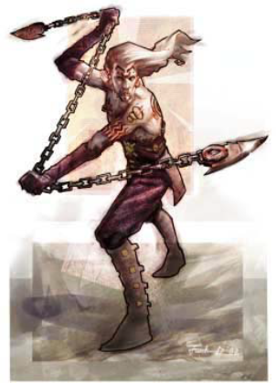

中型精类生物（跨位面亚种）

| 生命骰： | 3d6（10 hp） |
| 先攻： | +3 |
| 速度： | 30英尺 |
| 防御等级： | 16（+3敏捷，+3镶嵌皮甲），接触13，措手不及13 |
| 基本攻击／擒抱： | +1/+1 |
| 攻击： | 刺链+4近战，或短弓+4远程 |
| 全力攻击： | 刺链+4近战，或短弓+4远程 |
| 伤害： | 刺链2d4，短弓1d6/*3 |
| 面宽／触及： | 5英尺/5英尺（刺链攻击为10英尺） |
| 特殊攻击： | 偷袭+1d6 |
| 特殊能力： | 视线躲藏Hide in plain sight，阴影诅咒shadow curse，高等微光视觉superior low-light vision |
| 豁免： | 强韧+2，反射+7，意志+4 |
| 属性： | 力量10，敏捷16，体质11，智力11，感知10，魅力9 |
| 技能： | 躲藏+9，聆听+8，潜行+9，搜索+6，侦察+8，生存+6（追踪时+8） |
| 专长： | 警觉Alertness，异种武器擅长（刺链）（B）Exotic Weapon Proficiency (spiked chain) (B)，武器娴熟Weapon Finesse |
| 地域： | 任意森林和地底（幽影位面Plane of Shadow） |
| 组织： | 单独solitary，巡逻小队patrol（3-6）或袭击小队raid（7-12） |
| 挑战等级： | 1 |
| 宝物： | +1盖尔-拉兰gal-ralan外加标准财产 |
| 阵营： | 通常中立邪恶 |
| 进化： | 按照角色职业 |
| 等级调整： | +1 |
沙达-凯（shadar-kai；注：在多数场合中，词频更高的hadar-kai]和hadow fey]一样都被译作[影灵]，此处分离处理只做指示作用，剩余部分因循旧便，不做分离）或说影灵（shadow fey）的灵魂蒙受了来自阴影的荼毒，是一类性情怨毒、意志坚定的种族。这些影灵灰肤而黑眸，身材略高于普通人类，轻柔的举止透露着优雅与离奇出色的静谧。无论这些影灵走到哪里，阴影都总会协随身动。即便是他们的衣褶投下的阴影似乎都比寻常类人生物的更为幽深，仅需踏入任何一片寻常阴影之中，他们就能轻易地从其他人的视野之中消失。
影灵尤其偏爱那些像是刺链一般能够与之优雅和灵巧相配的轻型武器。多数影灵都热衷于各式各样的穿刺以及纹身作为自己的装饰。
在遥远的过去，影灵曾经试图保护这个世界免遭那些崛起的类人生物侵害。熟习幽影魔法的影灵与来自幽影位面的一股黑暗力量立定契约，以期让整个世界都陷入永无止境的黄昏，而影灵则会在此建立他们至高无上的治权。
然而，这一试验的结果脱离了既定的预想，影灵就此与幽影位面永远地束缚在了一起，受到的诅咒使得他们的灵魂注定坠入至暗至深之处。这一阴影诅咒至今依旧影响着影灵，这一种族中的每一位成员都将为了延缓这场注定到来的毁灭而抗争终生。
与幽影位面持续不断的拉锯使得影灵变得阴郁而好斗。极少有人能够理解影灵所处的困境。即便影灵能够找到暂时的解决方案，他们也不得不在漫长的痛苦之中挣扎，这让他们变得更加凶残。他们对于施虐施暴的倾向伴随着代际的更迭持续增长。
影灵会讲通用语、精灵语、以及木族语。
同时受其种族与幽影位面之间无与伦比的天然亲和所带来的诅咒与祝福，影灵行事向来隐秘，并具有充分的欺骗性。如有可能，他们就会神不知鬼不觉地盗走物品；若有必要，他们也能从伏击之处发起突袭。影灵之中的施法者总是偏爱幽影与幻术魔法，鲜有影灵团体不由一位强大的施法者实行领导。善于潜行、视觉敏锐远胜其他生物的影灵几乎总是能够保证一场战斗以他们预先设定的形式进行。
数据组中所示的影灵身着一件+1盖尔-拉兰（见于下文影灵物品）。
偷袭Sneak Attack（Ex）：无论何时，当一名影灵的敌人无法应用敏捷加值或受其夹击之时，这名影灵就可以通过一次成功的近战攻击对他造成额外的1d6点伤害。这一伤害可与其他来源――例如游荡者等级――的偷袭伤害叠加。
视线躲藏Hide in Plain Sight（Su）：即便遭到注视，影灵也能够使用躲藏技能。只要不受自然日光、法术昼明术的效应范围或类似的魔法光照所照亮，影灵就能在缺乏实际掩体的开阔地带实施躲藏。
阴影诅咒Shadow Curse（Su）：幽影位面对影灵的灵魂持续施加着巨大的牵引力，使其灵魂与肉体之间的联系相当脆弱。每当一名影灵陷入震慑Stunned、晕眩Dazed、恍惚Staggered或是昏迷Unconscious（自然睡眠除外）时，他们都必须进行一次意志豁免（DC15）以避免其部分灵魂堕入幽影位面之中。如果一名影灵已经身着盖尔-拉兰，那么她在卸除之时也必须试着进行一次豁免检定（见于下文影灵物品）。
灵魂遭受损害的影灵将会获得一个负向等级，在其灵魂完全得到修复之前，这一负面等级都将无法移除。如果再次面对需要进行检定以对抗阴影诅咒的状况，影灵将可能获得额外的负向等级。一名身处幽影位面的影灵可以通过法术高等复原术greater restoration的效果将其灵魂重新缝合在其躯体之上。而身处物质位面（或是其他任何地点）的影灵则必须使用法术许愿术wish或是奇迹术miracle才能得以修复灵魂。
位于阴影诅咒折磨之下的影灵无法被人复活（raised from the dead，即接受法术死者复活raise dead）或是复生（resurrected，即接受法术复生术resurrection），也无法获得经验值。来自阴影诅咒的触碰不断折辱着影灵，用冰冷的虚无填充着她的内心，除去其中意志最为坚定那些个体，其他人都将屈从于这份诅咒的力量，最终永远地离开物质位面。
前往幽影位面并停留于此的影灵能够相对减轻来自阴影诅咒的效应影响并免于遭受其不良效应的困扰。然而，如果她尚未恢复她的灵魂就离开幽影位面，她将再次遭受来自阴影诅咒的效应影响，直到她重返幽影位面或是恢复她的灵魂。
高等微光视觉Superior Low-Light Vision（Ex）：在昏暗照明的环境中，他们的可视距离是人类的四倍。
技能：在黑暗或昏暗环境（位于日光或是法术昼明术的影响区域除外）中，影灵在躲藏检定上拥有+10种族加值。
影灵发展成了一类掠夺型社群。他们几乎没有属于自己的永久性城市，却往往被目击到出现在其他聚集地中。人类与其他智慧建造的城市基本无法阻挡决意渗透的影灵团体，因为这些城市往往遍地都是阴影。
物质位面中仅存的少数影灵城市被幻术与幽影魔法所隐蔽，并由牵引着幽影獒犬的影灵哨兵成群结队地严密守卫。许多影灵都已吞融于幽影位面之中，即便是他们昔日最为伟大的城市如今也不过是一些荒凉破败、人烟稀少的地点。
绝大多数的影灵国度都是由强大幻术师所统治的法师政权。影灵憎恨其他精类，他们将会追猎并捕杀那些不幸偶遇他们的不幸精类。偶尔，影灵也会和其他邪恶精类结盟，通常都是为了蒙骗或渗透那些善良类人生物的社群。
由阴影诅咒所带来的影响萦绕在影灵文化的各个面相之间，居留在物质位面对于这些生物而言是一场痛苦而漫长的抗争。
绝大多数影灵使用盖尔-拉兰（见于下文）以将其灵魂锚定在躯体之中并借此抵御阴影诅咒。
盖尔-拉兰Gal-Ralan：当这枚由钢铁冷锻而成的臂环佩戴在身（占据原本属于护腕的装备位（*即手腕arms））时，同种金属制成的长钉就将穿刺佩戴者的前臂。这一装置能将佩戴者的灵魂锚定在躯体之中，但也将就此造成永无止境的痛苦。一旦角色佩戴盖尔-拉兰，她就会受到1点体质伤害，这种形式造成的伤害在移除盖尔-拉兰之前无法通过其他任何方式恢复。
盖尔-拉兰为佩戴者的豁免掷骰提供+1至+5的抗力加值。该效益在面对死亡效应、能量吸取以及其他影响佩戴者灵魂的效果（如阴影诅咒）时将会额外+2。例如，+2盖尔-拉兰将会在对抗上述效应时提供+4抗力加值，+3盖尔-拉兰将会在对抗上述效应时提供+5抗力加值，以此类推。
施法者等级：5级；制造需求：制造奇物Craft Wondrous Item，提升抗力resistance，施法者等级必须达到盖尔-拉兰加值的三倍。市场价格：625 gp（+1），2,500 gp（+2），5,600 gp（+3），10,000 gp（+4），或15,600 gp（+5）。重量：-。
黑石符文Blackstone Rune：那些被阴影诅咒所击溃的影灵通常会转而利用这些黑石符文。这一符文是被绘制在小而光滑的石头上的复杂印记。一枚黑石符文可以在其魔法消散之前使用三次。
施法者等级：9级；制造需求：制造奇物Craft Wondrous Item、异界传送plane shift；市场价格：3,300 gp。重量：-。
夜之精萃Night Extract：当被掷出或是掉落时，仅一小瓶这样的魔法液体就足以将周边20英尺半径以内光照环境的压制到星光水平starlight（*根据微光视觉在phb中的原文描述，我们可以推测这等效于昏暗照明）。魔法光照在此区域之内依旧生效（并将抵消这一效应），但火把、提灯、照明杖sunrods等其他凡间光源直到离开这一区域之前都将受到压制。针对受夜之精萃影响到区域之内的目标所进行的侦查检定DC+10，然而拥有黑暗视觉或高等微光视觉的生物可以忽略这一加值，拥有普通微光视觉的生物则将能在星光之下进行侦察检定时获得+5加值。夜之精萃的效应将为身处其中的生物在对抗没有微光视觉的生物时提供九成隐蔽状态（40%失手率），在对抗拥有昏暗视觉的生物时提供半隐蔽状态（20%失手率），在对抗拥有黑暗视觉或高等微光视觉的生物时不提供任何隐蔽状态。这一效应将会持续10分钟。
施法者等级：1级；制造需求：制造奇物Craft Wondrous Item、光亮术light；市场价格：50 gp。重量：-。
影灵的偏好职业是游荡者。虽然游荡者是影灵之中最为常见的职业，但仍有许多其他影灵将会选择成为法师或是牧师。影灵很少工于近战，因而鲜有个体能够成为优秀的战士、巡林客、武僧或是野蛮人。
由于其拥有的初始生命骰及其独特的能力，影灵有效角色等级（ECL）为+4。因此，一名1级影灵游荡者的ECL为5，即其相当于一名5级角色。